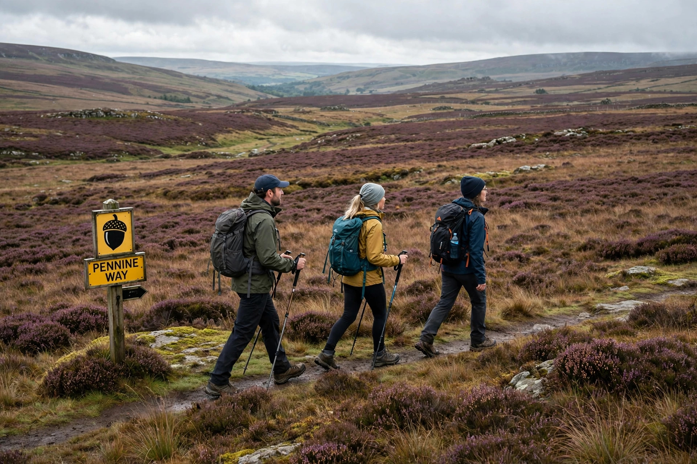

| Pennine Way | |
|---|---|
| Length | 268 miles (431 km) |
| Trailheads | Edale, Derbyshire — Kirk Yetholm, Scottish Borders |
| Use | Hiking |
| Season | All year |
The Pennine Way is a long-distance National Trail in England, running 268 miles (431 km) from Edale in the Peak District to Kirk Yetholm just inside Scotland. It follows the Pennine ridge — the "backbone of England" — through the Yorkshire Dales and Northumberland National Park. Opened in 1965, it was the first National Trail in Britain and remains one of its toughest long-distance walks.

The idea of a Pennine trail was proposed by journalist and rambler Tom Stephenson in 1935, inspired by the Appalachian Trail in the United States. Officially opened on 24 April 1965, the trail helped establish the legal and institutional framework for public access to open country in Britain, later extended by the Countryside and Rights of Way Act 2000.
North from Edale the route climbs Kinder Scout, crosses Bleaklow and the boggy Dark Peak moors, then runs through the Yorkshire Dales via Malham, Ingleborough and Cross Fell — the highest point on the trail at 893 m. Beyond Hadrian's Wall it crosses the Cheviot Hills to finish at the Border Hotel in Kirk Yetholm. The complete walk typically takes two to three weeks; the fastest recorded times are under three days.